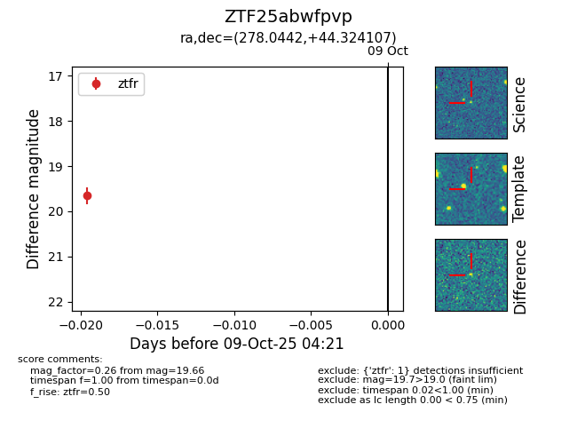

FINK: ZTF25abwfpvp
Lasair: ZTF25abwfpvp
ALeRCE: ZTF25abwfpvp
ZTF25abwfpvp (ztf,fink)
equatorial (ra, dec) = (278.0442,+44.32411)
galactic (l, b) = (72.7567,+21.84211)

last ztfr=19.66
1 ztfr detections